～白沙瓦的威士忌～
早上的 Saddar Road，店未開，沒有街邊茶檔，這裏的人，沒有舊城區那邊熱情，行到 Tourist Inn Motel 外面的食檔吃東西，很多蒼蠅飛來飛去。他們早上通常只吃麵包和喝茶，昨天早上在舊城那邊看見有些檔在煎蛋的，但這裏見不到，也不懂 Urdu 語怎樣叫。
有個男人走過來，和我談話，其實目的是想我去他的珠寶店看，他問我住在哪一間旅館，之前 Prince 叫我不要說實話，叫我答 Spogmay Hotel，我照做了。
九時 Prince 來到接我，問我今早有沒有遇過什麼人，我告訴他遇到那個珠寶店的人，給他看他的名片，他說這個人只想我買東西，不要理他，然後他說我答他住在 Spogmay，這樣很好。他怎知的呢？我感到很怪異。
不過，Prince 不是萬能的，今天在 Passport Office，他也無能為力了。
回想若我在香港拿到 Multiple Entry Visa，便不到浪費多一天的時間。
在香港辦巴基斯坦簽證的時候，太過誠實地在申請表填了會去阿富汗，很天真地以為這樣可以申請到 Multiple Entry Visa，但那個收申請表的人一野就話：「你不可以去阿富汗」，更只給我一個月的 Single Entry Visa，和 Officer 見面時又問我為什麼去阿富汗，說我不可以去，說我這樣寫成為什麼什麼 suspect，差點連巴基斯坦的 Visa 他也不發給我。
這個世界總是有很多事情我是沒法理解的。整個過程他們只關心我去阿富汗，而不理會我去巴基斯坦幹什麼，我究竟是不是去錯了 Consulate。
更搞笑的是我這樣寫成為了 suspect。suspect of 什麼呢？一個假裝去旅行的恐怖分子，打算去阿富汗密謀策動另一次聖戰，還未去，就白痴地洩露了行動，被英明的巴基斯坦駐香港領事發現了，結果只發給他 Single Entry Visa…
Prince 如常的拍心口，「very easy」，在 Hayatabad 的 Passport Office，如常地不用排隊，直接進入去貼簽證和蓋印的房間。可是房間內的工作人員明顯不是全都是 Prince 的朋友，有一個人很明目張膽地收人疏通的錢，而那個人，卻是今天的主要工作人員。
不過這都不是大問題，最大問題是，阿 Officer 今天早上有事，沒空處理，而今天是星期五，下午休息。雖然十二時之前得到了 Officer 在申請表上的簽名，但就來收工了，沒有時間去整張簽證。Prince 不會神通廣大到要那些人 OT 的，今天是沒可能辦得到的了，只剩明天了。
回到 Saddar Road，吃完午餐，星期五下午，大批人在 Saddar Road 向西面（我估是 Mecca 的方向）朝拜，很壯觀，不知從哪裏來的廣播，唸著經文。這段時間，Saddar Road 被人佔用了，每人都準備自己祈禱用的毯子，鋪在地上，平時那些煩人的車輛不能行駛。
大概半小時後，人們漸散，Saddar Road 又回復原貌。在 Saddar Bazaar 游盪，被警察叫住，不許我行某條路，要我繞道，但查過我的護照後，又變得沒問題。
Peshawar Museum 還未開門，我行到火車站外的一個公園，這時候下起雨來，便走到公園中的涼亭坐下（很難得有得坐）。當我看書的時候，有兩個人走過來和我談話，談著談著，原來其中一個年輕人就是在 lonely planet 的 forum 中答我問題的人，那時他在 forum 中說，若我來到 Peshawar 要請我喝茶，但隨即有些人回應，叫我別隨便喝人的茶，因為有些人會下藥，諸如此類。
他名叫 Hussain。因為之後我想去博物館，又約了 Prince 去舊城，所以不喝茶，改了約 Hussain 晚上吃飯。原來 Hussain 也認識 Prince，說他是個很出名的 Tour Guide。就在這時候，Prince 打電話給我（他給了我一張 SIM Card），竟然問我現在在哪裏，和什麼人在一起。我只回答他我在等博物館開門。
其實這裏是不是充滿 Prince 的線眼，我的行蹤都會有人報告給他的呢？
博物館二時半開門，但是，下午二時停電，所以沒有燈，黑媽媽，結果我要用手電筒照著來看，這樣參觀博物館還是第一次。其實這些國營的是不是應該要有後備電源呢？不過三時電又回來了。這博物館有很多 Gandhara 時的佛教古物，Gandhara 是位於東阿富汗和北巴基斯坦的古國，傳說釋迦牟尼在這地方的菩提樹下得道。
遊完博物館，又和 Prince 會合去舊城，看些 Carpet Shop，說那些 Carpet 是阿富汗來的，若果我在阿富汗才買會貴很多倍。不過雖然是便宜，但我不想帶著些毯周圍走。然後他帶我去舊城買阿富汗人常載的帽，到二手市場買當地人的衣服 （Shalwar），只用 Rs 100。告訴我穿這些會較安全，又說我樣子像阿富汗人（…）。他又送我一件寫著「我愛阿富汗」的 T，但件 T 超細件的，擺明是童裝，玩嘢咩。
到時到候 Prince 就要去祈禱，他去一所小型的 Mosque，我就在外面等，看見一個鮮蔗汁的檔，旁邊站著一對夫婦，他們抱著一個嬰兒，喝蔗汁，看著我，笑得很開心，看見他們，感到一份很幸福的感覺，真想把他們拍下來，後悔沒有這樣做。
舊城中有個地方像個印刷工場，Prince 的刊物就在這裏印，如果趕得及，明天可以給我一本。天開始暗，他還想帶我去別的地方，但我約了 Hussain，唯有告訴他。
但想不到，Prince 叫我不要去，他說 Hussain 其實是個 Tour Guide，只想賺遊客錢，又說他們是認識的，Hussain 更在他的辦公室工作。我堅持要去，他竟然要一起去…。
我們去到 Green Hotel 對面的一個樓上辦公室，Hussain 果然在內。我用他們的電腦上網，但那部電腦真是慢到嘔，Prince 問我可不可以幫他安裝中文輸入法，但他的 Win XP 是老翻，又找不到安裝的碟，加上慢到發呆的關係，開個控制台都要成幾分鐘，花了差不多半小時也安不了，結果放棄了。
他們帶我到 Saddar Bazaar 吃晚飯。巴基斯坦和阿富汗的食店通常都有些檯是被布圍住，是給有女性的客人坐的，而樓上更是全層都給女性坐，不過今晚沒有女客人，我們可以坐在一樓。由一樓看下去，熱鬧的街，突然發覺，原來我只來了兩天，但好像過了很久似的，而明天卻要走了。
我在 lonely planet 的 forum 認識 Hussain，他為我解答了不少問題，期間總是有些人唱反調，例如他說我可以在 Passport Office 取得 re-entry visa，但些人就說那不是叫 re-entry，怎樣怎樣，如何如何，世上總有這類人。事實證明 Hussain 說的都是事實。
Hussain 在 forum 上邀請我喝茶，隨即又有些人叫我千萬別喝，說有些人會下藥，如此這般。後來 Hussain 的 user account 更被停用還是刪除了，他說因為他邀請我喝茶，所以便這樣了，我很驚訝，不太相信 lonely planet 的 forum 竟會這樣做。
怎樣也好，我也很感謝他，但原本我想請他吃晚餐，但因為我是客人，他就堅持要請我，又為我寫下遊阿富汗的一些貼士。很想和他談天說地，可惜 Prince 在，總是說話不停。
飯後，又到別的地方喝茶，坐位很擠迫，我後面是個在清潔食物的工人，他和我打招呼，Prince 說他是阿富汗來的。Prince 曾說過那裏的人都想去別的國家打工生活。看見他很開心的樣子，我在想，阿富汗是如何的呢？
Prince 說：「茶，是白沙瓦的威士忌。」，正宗以茶代酒。
走時 Hussain 問我在什麼地方留宿，因為 Prince 在，我唯有答 Spogmay，我覺得對 Hussain 很不好意思。
在旅館洗澡時，突然停電，在什麼也看不見的情況下，繼續用那個水龍頭洗澡，唯一希望的是不要有小強爬在我身。弄乾身體，穿回衣服，坐在床上，靜靜地等待。這時我突然覺得，這些我來之前可能不會接受的住宿環境，已經沒有問題了。相信往後的日子我也不會太介意投宿的環境，這對一個背包客來說是好事。
也覺得自己開始習慣這裏的生活方式，不要說笑，蹲廁不但已經沒問題，用左手和水清潔，真的比坐廁和用紙巾清潔，更加衛生。
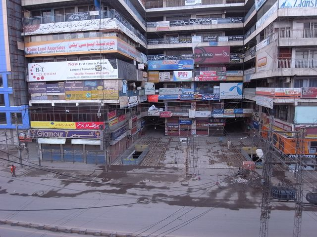
Saddar Road
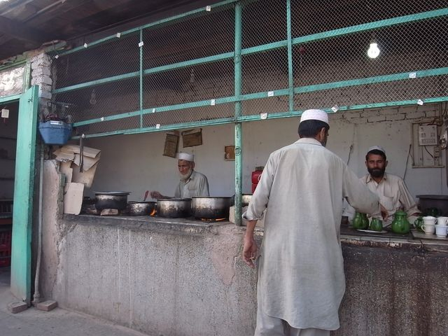
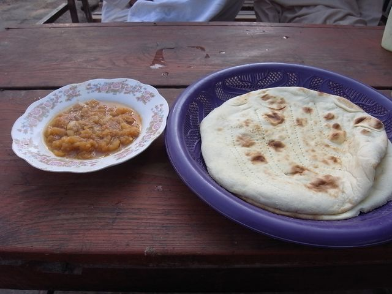
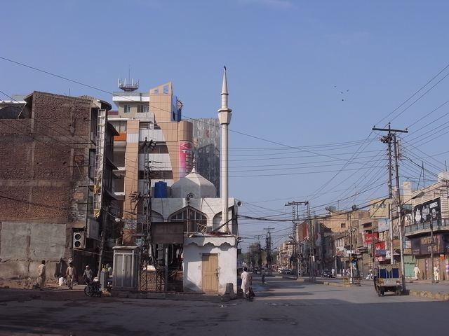
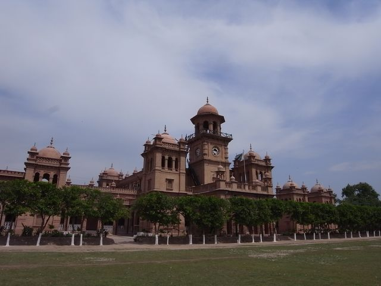
Islamic College
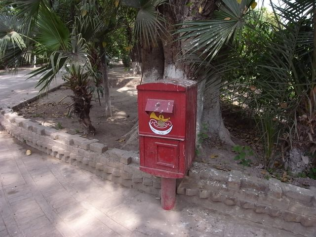
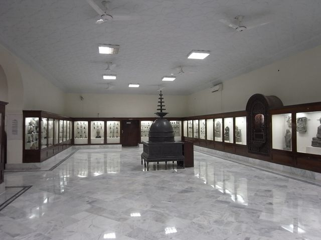
Peshawar Museum
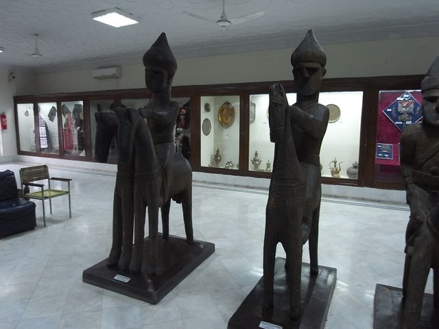
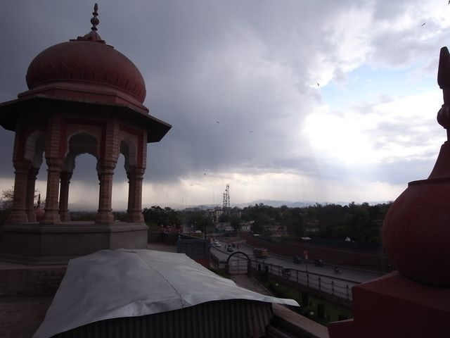
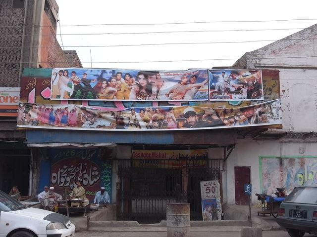
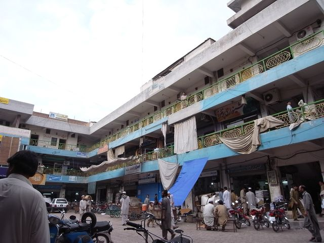
Old City 內印刷工場
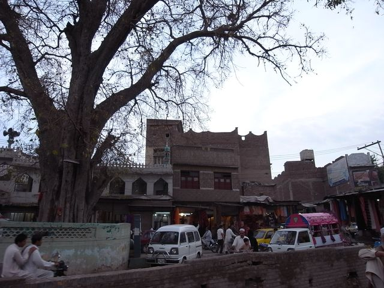
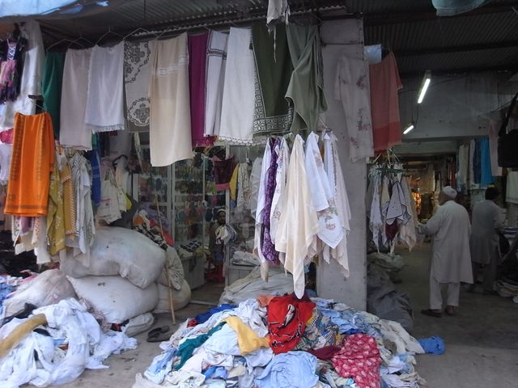
二手市場
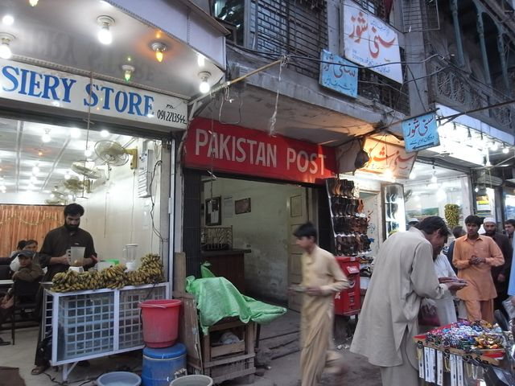
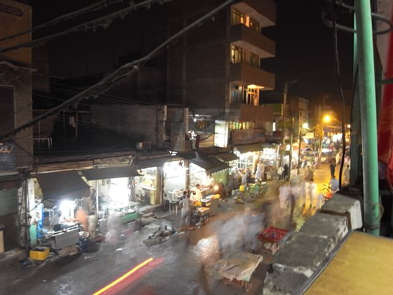
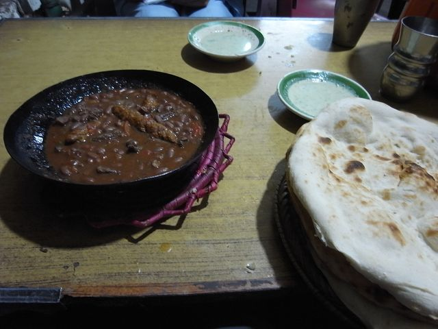